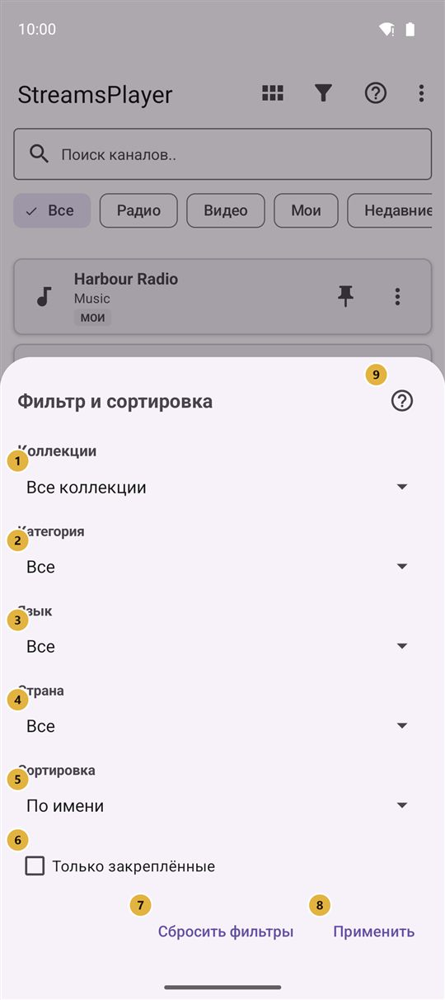
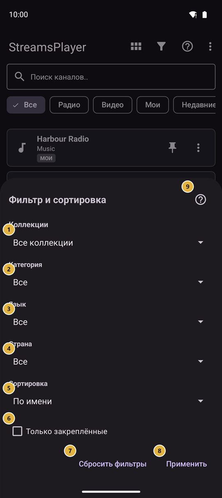

Фильтр и сортировка
Для чего этот экран
Сузьте длинный список до нужных станций и выберите порядок. Лист открывается поверх главного экрана, а список меняется, когда вы нажимаете «Применить».


Порядок действий
- Выберите коллекцию 1, если нужна готовая группа каналов.
- Сузьте список по категории 2, языку 3 и стране 4. В каждом списке только значения, которые есть в ваших каналах.
- Выберите порядок в поле «Сортировка» 5.
- Отметьте «Только закреплённые» 6, чтобы видеть лишь закреплённые каналы.
- Нажмите «Применить» 8. Чтобы начать заново, нажмите «Сбросить фильтры» 7.
Элементы
1КоллекцииГотовая группа каналов.
Выберите одну коллекцию, чтобы видеть только её каналы, или «Все коллекции», чтобы видеть все.
- Отмена
- Выберите «Все коллекции».
2КатегорияВид передач.
Музыка, новости, разговорные и так далее, как их называет каталог каналов. «Все» оставляет все категории.
- Отмена
- Выберите «Все».
3ЯзыкЯзык канала.
Показывает только каналы на выбранном языке. «Все» оставляет все языки.
- Отмена
- Выберите «Все».
4СтранаОткуда канал.
Показывает только каналы выбранной страны. «Все» оставляет все страны.
- Отмена
- Выберите «Все».
5СортировкаПорядок списка.
По названию, теме, языку или стране либо с недавно воспроизведённых или добавленных каналов. Порядок действует ниже закреплённых каналов: они всегда остаются вверху.
- Отмена
- Выберите другой порядок и нажмите «Применить».
6Только закреплённыеТолько закреплённые вами каналы.
Быстрый путь к любимым. Закреплённые каналы и так стоят вверху списка; эта отметка скрывает остальные.
- Отмена
- Снимите отметку и нажмите «Применить».
7Сбросить фильтрыУбирает все фильтры и закрывает лист.
Список возвращается ко всем каналам в последнем выбранном порядке. Текст поиска тоже очищается.
- Отмена
- Откройте лист и задайте фильтры снова.
8ПрименитьПоказывает настроенный список.
Применяет коллекцию, категорию, язык, страну, порядок и отметку закреплённых вместе и закрывает лист. Строка над списком называет то, что включено.
9СправкаОткрывает эту страницу.
Лист остаётся открытым под страницей; «Назад» возвращает к нему.
- Сочетание клавиш
- F1